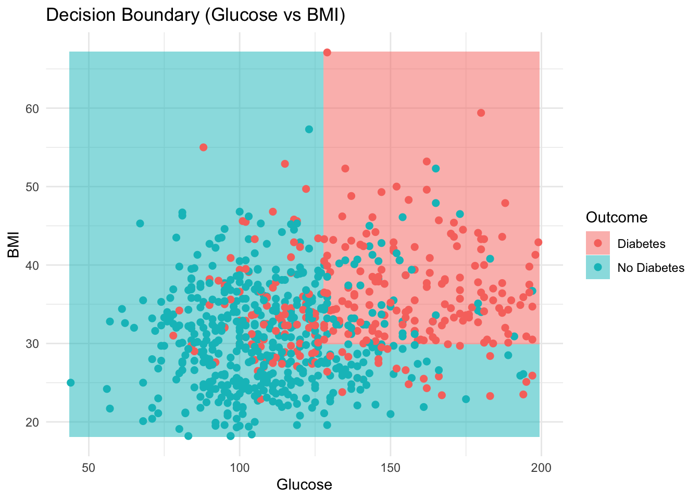
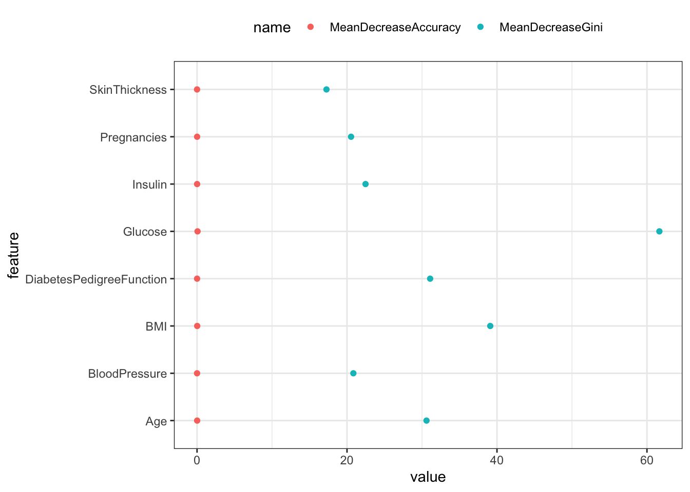

Code
library(pdp)
library(randomForest)
library(ggplot2)
library(purrr)
library(tidyr)
library(dplyr)
library(rpart)
library(rpart.plot)
library(caret)
library(tidyverse)
library(pROC)
library(gridExtra)
library(lime)
library(cluster)library(pdp)
library(randomForest)
library(ggplot2)
library(purrr)
library(tidyr)
library(dplyr)
library(rpart)
library(rpart.plot)
library(caret)
library(tidyverse)
library(pROC)
library(gridExtra)
library(lime)
library(cluster)The data is imported and cleaned. The outcome variable is recoded from numeric (0/1) into descriptive labels (“No Diabetes” and “Diabetes”), improving clarity in the analysis and visualization. All missing values replaced with median.
# Prepare the data
df <- read.csv("data/diabetes.csv")
df <- df %>%
mutate(Outcome = ifelse(Outcome == 0, "No Diabetes", "Diabetes"))
df$Outcome <- as.factor(df$Outcome)
missing_cols <- c("Glucose", "BloodPressure", "SkinThickness", "Insulin", "BMI")
# Replace 0 with median
for (col in missing_cols) {
median_value <- median(df[[col]][df[[col]] != 0], na.rm = TRUE)
df[[col]][df[[col]] == 0] <- median_value
}
#sapply(df, function(x) sum(x == 0))The code below implements a Decision Tree classification model to predict diabetes outcomes using patients’ diagnostic data. The dataset consists of multiple diagnostic measurements and an outcome variable, which indicates whether a patient has diabetes or not. The dataset is split into training (70%) and testing (30%) sets to allow for model training and performance evaluation. A decision tree is then built to predict the outcome based on all available predictors from this dataset.
set.seed(5293)
train_index <- createDataPartition(df$Outcome, p = 0.7, list = FALSE)
train_data <- df[train_index, ]
test_data <- df[-train_index, ]
tree_model <- rpart(Outcome ~ ., data = train_data, method = "class")
rpart.plot(tree_model, type = 2, fallen.leaves = TRUE, box.palette = 'BuOr')The decision tree graph illustrates the process by which the model makes predictions about diabetes outcomes. Each internal node represents a decision rule based on one of the predictors. The tree splits first on Glucose with a value of 144, indicating that glucose levels play the most significant role in predicting diabetes. Patients with glucose levels below this threshold are more likely to be classified as “No Diabetes”, while those above are more likely to be classified as “Diabetes”. Further splits occur on other important variables, such as BMI, DiabetesPedigreeFunction, and Age, which also contribute meaningfully to the decision-making process. For example, patients with lower glucose levels, lower BMI, and lower DiabetesPedigreeFunction values are more often classified as “No Diabetes”. One of the key advantages of the decision tree is that it reflects interactions between variables. Even when glucose levels are high, lower DiabetesPedigreeFunction values or younger age may reduce the probability of being classified as “Diabetes”. Finally, the ‘0.65’ in the first node indicates the proportion of samples classified as “No Diabetes” at that point in the tree. The tree starts at the top with 100% of the dataset, which gradually splits based on predictor values, showing the pathway that leads to each prediction.
predictions <- predict(tree_model, test_data, type = "class")
confusion <- confusionMatrix(predictions, test_data$Outcome)
print(confusion)Confusion Matrix and Statistics
Reference
Prediction Diabetes No Diabetes
Diabetes 54 25
No Diabetes 26 125
Accuracy : 0.7783
95% CI : (0.719, 0.8302)
No Information Rate : 0.6522
P-Value [Acc > NIR] : 2.232e-05
Kappa : 0.5098
Mcnemar's Test P-Value : 1
Sensitivity : 0.6750
Specificity : 0.8333
Pos Pred Value : 0.6835
Neg Pred Value : 0.8278
Prevalence : 0.3478
Detection Rate : 0.2348
Detection Prevalence : 0.3435
Balanced Accuracy : 0.7542
'Positive' Class : Diabetes
# Accuracy
cat("Accuracy:", confusion$overall["Accuracy"], "\n")Accuracy: 0.7782609 From the confusion matrix, we can see that there are 54 cases of true positives, meaning that the patients had diabetes and were correctly predicted as having diabetes. There are also 125 true negatives, along with 25 false positives and 26 false negatives. The accuracy rate shows us how often the model makes correct predictions — in this case, about 78% of the time. Sensitivity reflects the model’s ability to correctly identify patients who actually have diabetes. Since missing a diabetes diagnosis could have serious consequences, higher sensitivity is generally preferred in this context. Specificity, on the other hand, measures the model’s ability to correctly identify patients without diabetes. Here, around 83% of ‘No Diabetes’ cases are correctly identified, which suggests the model is also effective at avoiding false alarms — an important consideration, as people without diabetes should not receive unnecessary treatment.
Although this unpruned decision tree captures many splits and fits the training data well, it introduces several challenges. These include overfitting (due to excessive complexity), reduced interpretability, and poorer generalization to new patients. Because an unpruned tree is highly sensitive to minor variations in the data, its structure may change drastically with small changes in input, potentially reducing its reliability. To address this, pruning helps remove unnecessary splits, allowing the model to focus on the most important predictors. This leads to a simpler and clearer structure, which performs better on unseen data. This is particularly important in a healthcare context, where models should be both accurate and interpretable to support decision-making effectively.
plotcp(tree_model, las = 1, upper = 'splits')
Pruning the tree by the complexity parameter (cp) plot is an important step for selecting the optimal size of a decision tree for balancing the model complexity and predictive performance, it controls the pruning. The plot above shows the relationship between the tree’s complexity (number of splits) and its cross validation error rate. At the lowest cp values (0.01), the error starts to flatten or even increase slightly, this suggest that adding more splits does not improve performance and this suggests overfitting starts here.
The cp plot suggests that a cp value around 0.014 to 0.011 minimizes cross-validation error without overfitting. By pruning the tree at this cp, we can achieve a simpler, more robust model that improves generalization to new data while maintaining strong performance in detecting diabetes cases. Next, I will generate a pruned tree with best cp value.
best_cp <- tree_model$cptable[which.min(tree_model$cptable[,"xerror"]),"CP"]
pruned_tree <- prune(tree_model, cp = best_cp)
# See the improve version of tree
rpart.plot(pruned_tree, type = 2, fallen.leaves = TRUE)This pruned tree is overall simpler and has fewer nodes. A lot of the small and specific nodes are being removed. This plot is now easier to interpret, less focused to the noise in the training data and less likely to overfit. Variable ‘Glucose’ is still the first split, indicate that this is still the most important predictor same as the unpruned tree. Other important variables such as ‘DiabetesPedigreeFunction’, ‘BMI’, ‘Pregnancies’ and ‘Age’ are still retained, meaning these are the still the strongly related factors to predicting diabetes outcomes. Overall, pruning improves the decision tree’s generalization ability while preserving its predictive power and interpretability, it matches well with the project’s goal of creating an understandable and effective predictive model for diabetes diagnosis.
# New prediction
pruned_preds <- predict(pruned_tree, test_data, type = "class")
confusion_pruned <- confusionMatrix(pruned_preds, test_data$Outcome)
print(confusion_pruned)Confusion Matrix and Statistics
Reference
Prediction Diabetes No Diabetes
Diabetes 55 24
No Diabetes 25 126
Accuracy : 0.787
95% CI : (0.7283, 0.838)
No Information Rate : 0.6522
P-Value [Acc > NIR] : 5.84e-06
Kappa : 0.529
Mcnemar's Test P-Value : 1
Sensitivity : 0.6875
Specificity : 0.8400
Pos Pred Value : 0.6962
Neg Pred Value : 0.8344
Prevalence : 0.3478
Detection Rate : 0.2391
Detection Prevalence : 0.3435
Balanced Accuracy : 0.7637
'Positive' Class : Diabetes
The accurary rate have a very slightly increase, it went from 0.7783 to 0.787, this means the pruned tree correctly classified nearly 79% in the test set. Sensitivity is now 0.6875 and this tells us the pruned tree correctly identified roughly 69% of true diabetes cases. Compared to the unpruned version, which had about 0.675, this is slightly improved and pruning did not sacrifice the ability to detect diabetes. Specificity is 0.84, the model correctly classified 84% of people without diabetes. This shows the pruned tree maintains very good performance in correctly classifying “No Diabetes” cases.
# Train with xval (default xval=10 for cross-validation)
tree_model_cv <- rpart(Outcome ~ ., data = train_data, method = "class", cp = 0.01)
#printcp(tree_model_cv)
best_cp <- tree_model_cv$cptable[which.min(tree_model_cv$cptable[,"xerror"]),"CP"] #0.01 best cp
pruned_tree_cv <- prune(tree_model_cv, cp = best_cp)
rpart.plot(pruned_tree_cv, type = 2, fallen.leaves = TRUE)
cv_pruned_preds <- predict(tree_model_cv, test_data, type = "class")
confusion_cv_pruned <- confusionMatrix(cv_pruned_preds, test_data$Outcome)
print(confusion_cv_pruned)Confusion Matrix and Statistics
Reference
Prediction Diabetes No Diabetes
Diabetes 54 25
No Diabetes 26 125
Accuracy : 0.7783
95% CI : (0.719, 0.8302)
No Information Rate : 0.6522
P-Value [Acc > NIR] : 2.232e-05
Kappa : 0.5098
Mcnemar's Test P-Value : 1
Sensitivity : 0.6750
Specificity : 0.8333
Pos Pred Value : 0.6835
Neg Pred Value : 0.8278
Prevalence : 0.3478
Detection Rate : 0.2348
Detection Prevalence : 0.3435
Balanced Accuracy : 0.7542
'Positive' Class : Diabetes
The code above applies cross-validation tuning to improve the performance of a decision tree. The rpart model is trained with xval = 10 (default), which means it automatically performs 10-fold cross-validation during the tree-growing process. The idea is to assess how well trees of various complexities (sizes) perform on unseen data.
After building the initial tree, the model has a cptable recording the performance and error rate for trees of different sizes, that is, different cp values. Again, the best cp is selected where the cross-validation error (xerror) is the lowest. This means we find the most balanced point between underfitting and overfitting. As a result, no significance improvement.
df_sub <- df %>% select(Glucose, BMI, Outcome)
simple_tree <- rpart(Outcome ~ Glucose + BMI, data = df_sub, method = "class", cp = 0.01)
glucose_range <- seq(min(df_sub$Glucose), max(df_sub$Glucose), length.out = 200)
bmi_range <- seq(min(df_sub$BMI), max(df_sub$BMI), length.out = 200)
grid <- expand.grid(Glucose = glucose_range, BMI = bmi_range)
grid$Outcome <- predict(simple_tree, grid, type = "class")
# Plot decision boundary with geom_tile (better color)
ggplot() +
geom_tile(data = grid, aes(x = Glucose, y = BMI, fill = Outcome), alpha = 0.5) +
geom_point(data = df_sub, aes(x = Glucose, y = BMI, color = Outcome), size = 2) +
labs(title = "Decision Boundary (Glucose vs BMI)", x = "Glucose", y = "BMI") +
theme_minimal()
This decision boundary plot contains variabls ‘Glucose’ and ‘BMI’, give us intuitive visualization of the model’s decision process. This plot shows exactly how the decision tree splits the data using simple rules. It makes the model interpretable, clear vertical separation shows ‘Glucose’ is the primary decision factor, while the limited horizontal influence of ‘BMI’ indicates it plays a secondary role. This helps explain and justify which variables are most useful in prediction. From this plot, we can easily spot where the model makes mistakes and roughly how accurate our model performs.
df_twovar <- df |>
mutate(Glucose_std = scale(Glucose),
BMI_std = scale(BMI))
train_data_sub <- df_twovar[train_index, ]
test_data_sub <- df_twovar[-train_index, ]
# Train Decision Tree (simple for visualization)
simple_tree <- rpart(Outcome ~ Glucose + BMI, data = train_data_sub, method = "class", cp = 0.01)
# Predict on test data
test_data_sub$pred <- predict(simple_tree, test_data_sub, type = "class")
# Create correct/incorrect column
test_data_sub <- test_data_sub %>%
mutate(correct = ifelse(Outcome == pred, "Test - Correct", "Test - Incorrect"))
# Combine with train data
train_data_sub$set <- "train"
test_data_sub$set <- "test"
plot_data <- bind_rows(train_data_sub, test_data_sub)
# Plot
ggplot(plot_data, aes(x = Glucose_std, y = BMI_std)) +
geom_point(data = filter(plot_data, set == "train"),
aes(color = Outcome),
size = 3, alpha = 0.5) +
geom_point(data = filter(plot_data, set == "test", correct == "Test - Correct"),
aes(shape = correct, color = Outcome),
size = 4, stroke = 1.5) +
geom_point(data = filter(plot_data, set == "test", correct == "Test - Incorrect"),
aes(shape = correct, color = Outcome),
size = 5, stroke = 1.5) +
scale_shape_manual(values = c("Test - Incorrect" = 4)) +
labs(title = "Decision Tree Prediction Results on Diabetes Data (Glucose vs BMI)",
x = "Standardized Glucose",
y = "Standardized BMI",
shape = "Prediction Result",
color = "True Outcome") +
theme_minimal()
This graph highlights the misclassifications of the decision tree model using Glucose and BMI to predict diabetes. While correct predictions are well-separated, many incorrect predictions occur in the overlapping middle regions, where Glucose and BMI alone are insufficient to distinguish between classes. Compared to the decision boundary plot, which shows how the model partitions the feature space, this plot provides clearer insight into individual misclassifications.
We are now moving from decision tree to random forest. The decision tree is simply and easy to interpert, but it has high rish of overfitting, when there is only one tree it could be very sensitive to noise and even a tiny changes in out dataset, it may not preform well with complex dataset. On the other hand, random forest is more complex but it improves the performance, it has much lower risk of overfitting because it averaging many trees. It is an ensemble of tree and that make this method more robust and stable. Generally, it produces much higher accuracy in most real-world dataset and we will see how it performs below.
Moving to Random Forest is a way to achieve better prediction performance and reduce model variance after pruning and testing single trees. It improves performance and generalization at the cost of losing a bit of interpretability.
set.seed(5293)
rf_model <- randomForest(Outcome ~ ., data = train_data)
rf_preds <- predict(rf_model, test_data)
confusion_rf <- confusionMatrix(rf_preds, test_data$Outcome)
print(confusion_rf)Confusion Matrix and Statistics
Reference
Prediction Diabetes No Diabetes
Diabetes 55 25
No Diabetes 25 125
Accuracy : 0.7826
95% CI : (0.7236, 0.8341)
No Information Rate : 0.6522
P-Value [Acc > NIR] : 1.156e-05
Kappa : 0.5208
Mcnemar's Test P-Value : 1
Sensitivity : 0.6875
Specificity : 0.8333
Pos Pred Value : 0.6875
Neg Pred Value : 0.8333
Prevalence : 0.3478
Detection Rate : 0.2391
Detection Prevalence : 0.3478
Balanced Accuracy : 0.7604
'Positive' Class : Diabetes
# Compare accuracy
cat("Pruned Decision Tree Accuracy:", confusion_pruned$overall["Accuracy"], "\n")Pruned Decision Tree Accuracy: 0.7869565 cat("Random Forest Accuracy:", confusion_rf$overall["Accuracy"], "\n")Random Forest Accuracy: 0.7826087 As we can see above, the accuracy rate is 0.77, sensitivity is 0.64, and specificity is 0.84. The overall performance is similar to decision tree. The sensitivity rate which is diabetes patients are correctly identified and a bit lower than tree while specificity is slightly better.
The improvement I expect from random forest is not strong here. By considering possible reasons like size of the dataset, or the variables itself provide clear decision boundaries, I think tree might have just handled as good as random forest. Although the result is not surprisingly good, random forest itself is more stable
# Predict on test data
tree_preds <- predict(pruned_tree_cv, test_data, type = "prob")[,2]
roc_tree <- roc(test_data$Outcome, tree_preds)
# Train Random Forest
rf_model <- randomForest(Outcome ~ ., data = train_data)
rf_preds_prob <- predict(rf_model, test_data, type = "prob")[,2]
roc_rf <- roc(test_data$Outcome, rf_preds_prob)
plot(roc_tree, col = "blue", main = "ROC Curve: Pruned Tree vs Random Forest")
lines(roc_rf, col = "red")
legend("bottomright", legend = c(
paste0("Pruned Tree AUC = ", round(auc(roc_tree), 3)),
paste0("Random Forest AUC = ", round(auc(roc_rf), 3))
), col = c("blue", "red"), lwd = 2)
The ROC curve comparison highlights the trade-off between interpretability and performance. While the pruned decision tree offers a simpler model which has an AUC value of 0.753, the Random Forest significantly outperforms it in prediction accuracy and its AUC values is 0.838). In this project, where accurate prediction of diabetes is critical, the Random Forest is better than pruned tree. However, the pruned tree remains valuable for explaining decision rules and successfully finds out the key risk factors.
While Random Forest offers strong predictive power, PDP often described as a “black-box” model. This means we know it makes good predictions, but we do not know which variables are driving these predictions or how they are impacting the predicted outcome. Although metrics like accuracy, sensitivity, specificity, and ROC/AUC show overall model performance, they do not tell us what the model has learned about individual variables. This method matches perfectly with my project’s goal, to find out the key factors that lead to diabetes.
# Train Random Forest model
set.seed(5293)
rf_model <- randomForest(Outcome ~ ., data = train_data)
vars <- colnames(df)[colnames(df) != "Outcome"]
pdp_data <- map_dfr(vars, function(v) {
pd <- pdp::partial(rf_model, pred.var = v, prob = TRUE, grid.resolution = 20) %>%
as.data.frame() %>%
mutate(variable = v)
names(pd)[1:2] <- c("value", "yhat")
return(pd)
})
ggplot(pdp_data, aes(x = value, y = yhat)) +
geom_line(linewidth = 1) +
facet_wrap(~variable, scales = "free_x") +
labs(title = "Partial Dependence Plots for All Variables",
x = "Value", y = "Predicted Probability (yhat)") +
theme_minimal() +
theme(plot.title = element_text(size = 14, face = "bold"))
Each panel in the plot shows how the predicted probability of diabetes (yhat) changes when the value of a single predictor variable increases.
my main finding is:
Glucose and BMI are clearly the most critical features, they are sharp and consistent increases in prediction probability which mean they are very important for diabetes prediction.
Age, DiabetesPedigreeFunction, and Pregnancies, contribute but have moderate to mild effects.
Insulin, BloodPressure, and SkinThickness are very flat lines meaning these variables have little effect on the prediction across their range, they are less important in the model’s decision making.
Partial Dependence Plots provided insight into how individual variables influence the predicted probability of diabetes, and it is also important to understand which variables contribute the most overall to the model’s predictive power. To achieve this, we use Variable Importance measures from the Random Forest model to quantify and rank the significance of each feature.
set.seed(5293)
rf_model <- randomForest(Outcome ~ ., data = train_data)
imp <- importance(rf_model, type = 2)
imp_df <- data.frame(
variable = rownames(imp),
importance = imp[, 1]
)
imp_df <- imp_df %>%
mutate(importance_scaled = importance / sum(importance) * 100) %>%
arrange(importance_scaled)
ggplot(imp_df, aes(x = importance_scaled, y = reorder(variable, importance_scaled))) +
geom_point(size = 3) +
labs(title = "Variable Importance (Scaled to Sum to 100)",
x = "Variable Importance Score",
y = "") +
theme_minimal() +
theme(plot.title = element_text(size = 14, face = "bold"))
The plot above summarizes which predictors have the greatest impact on the Random Forest model’s performance. The results show that Glucose is by far the most influential variable, followed by BMI, Age, and DiabetesPedigreeFunction. These variables likely play key roles in determining whether a patient has diabetes. Towards the bottom of the list, variables like Pregnancies, SkinThickness, and BloodPressure have relatively lower importance, suggesting they are less sigificant in making predictions in this dataset.
df2 <- data.frame(rf_model$importance)
df2 |>
rownames_to_column('feature') |>
pivot_longer(cols = starts_with('Mean')) |>
ggplot(aes(x = value, y = feature, color = name)) +
geom_point() +
theme_bw() +
theme(legend.position = 'top')
This plot shows two measures of variable importance calculated from the Random Forest model MeanDecreaseAccuracy which is the red dots, this measures how much the accuracy of the model decreases when the values of a variable are permuted. Higher values mean the variable is more important. The MeanDecreaseGini is the blue dots, this measures how much each variable contributes to decreasing the Gini impurity in the forest’s nodes. In simpler terms, it shows how often and effectively each variable was used to split data in decision trees.
Partial Dependence Plots provided valuable insights into the global importance and average effect of each feature on diabetes prediction, they do not explain how individual predictions are made. To better understand local behavior for specific cases, I use LIME to help us reveal the exact features driving each prediction on a case by case basis.
set.seed(5293)
n <- nrow(df)
test_index <- sample(n, 2)
train_data <- df[-test_index, ]
test_data <- df[test_index, ]
rf_model <- randomForest(Outcome ~ ., data = train_data)
model_type.randomForest <- function(x, ...) {
return("classification")
}
explainer <- lime::lime(subset(train_data, select = -Outcome), rf_model)
explanation <- lime::explain(x = subset(test_data, select = -Outcome),
explainer = explainer, labels = 'No Diabetes', n_features = 7,
n_permutations = 1000, feature_select = 'lasso_path')
plot_features(explanation)
The graph shows explanations for two individual predictions, the Case 339 and Case 11, where the model predicted “No Diabetes”. The bars indicate how much each feature contributed to the prediction. Red bars is Contradicts meaning features pushing the prediction away from “No Diabetes” and toward Diabetes. Blue bars is Supports, features pushing the prediction toward “No Diabetes”.
For case 339, the probability of “No Diabetes” is low which is 0.15, so LIME explains why the model leaned toward predicting Diabetes. The biggest negative impact comes from Glucose > 140, which strongly pushes toward diabetes. Other negative contributors include Pregnancies > 6, DiabetesPedigreeFunction > 0.626 and Insulin > 127. There is no supporting features therefore prediction probability for “No Diabetes” is very low. In short, this person has very high glucose and other risk factors made the model very likely to predict diabetes.
For case 11, the probability of “No Diabetes” is high which is 0.86, the strongest positive influences pushing toward “No Diabetes” include, BMI <= 36.6, Glucose <= 117 and Age <= 41. There are some weak negative contributors (pushing toward diabetes), like Insulin > 120 and SkinThickness > 25. However, the positive signals dominate so the the model confidently predicts No Diabetes. This person, healthy glucose levels, younger age, and lower BMI greatly increased the likelihood that this person would be classified as ‘No Diabetes’, even though minor risk factors exist.
nodiabetes <- df %>%
filter(Outcome == "No Diabetes")
set.seed(123)
index <- sample(nrow(nodiabetes), 10)
nodiabetes_samp <- nodiabetes[index, ]
# Compute Gower distance matrix (excluding Outcome column)
gower_dist <- daisy(nodiabetes_samp[, -which(names(nodiabetes_samp) == "Outcome")])
# Convert to dataframe for plotting
df_gower <- as.data.frame(as.matrix(gower_dist)) %>%
rownames_to_column('obs1') %>%
pivot_longer(cols = -obs1, names_to = "obs2", values_to = "gower") %>%
mutate(obs1 = as.numeric(obs1),
obs2 = as.numeric(obs2)) %>%
filter(obs1 < obs2)
# Plot Gower distances
ggplot(df_gower, aes(x = gower)) +
geom_dotplot() +
labs(title = "Gower Distances for Pairs of Survived Patients",
x = "Gower Distance",
y = "Count") +
theme_minimal()This part calculates the Gower distance for pairs of patients who were classified as “No Diabetes” and visualizes the distances. The left cluster (0–100 Gower Distance) on the plot is showing most pairs have low Gower distances, meaning that many “No Diabetes” patients are quite similar to each other across all measured features. These similarities might be in features like glucose, age, BMI. It could indicate a consistent pattern in “No Diabetes” patients. The right Cluster (300–500 Gower Distance) is showing that some patient pairs have high Gower distances, suggesting they are much less similar. This indicates that within ‘No Diabetes’ patients, there is still heterogeneity, some people look very different based on their profile, yet still end up being classified as “No Diabetes”.